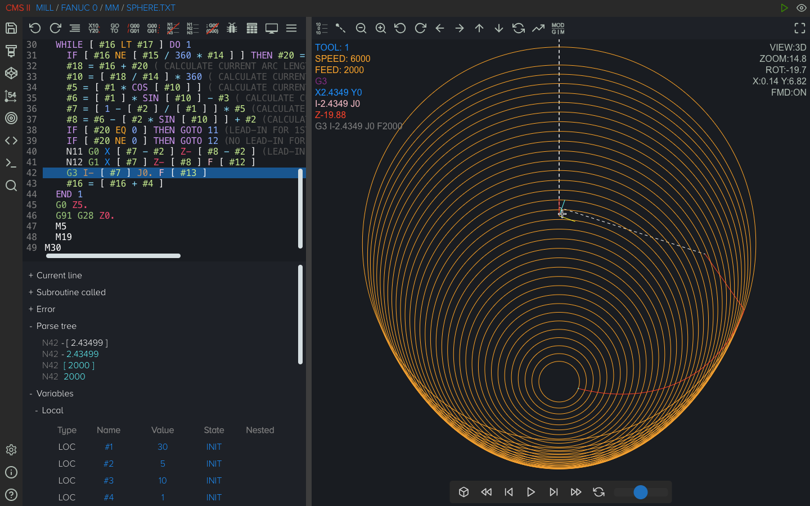
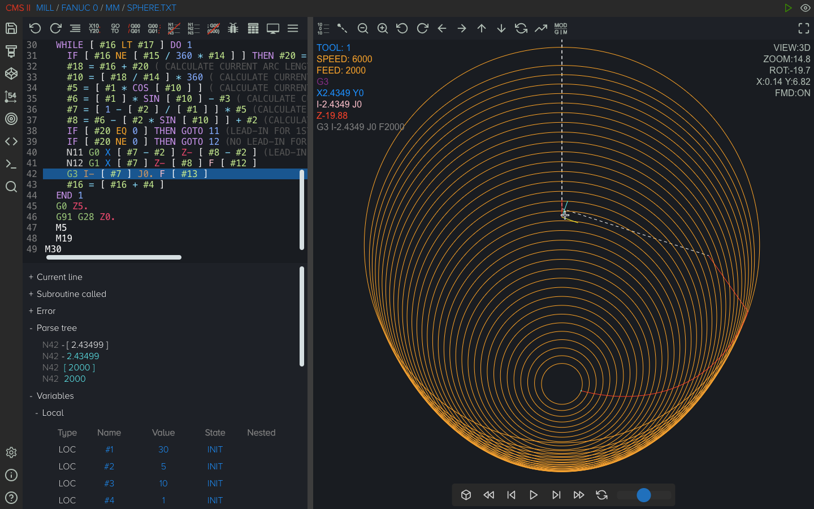

מהו CNC Macro Simulator II?
CNC Macro Simulator II הוא עורך וסימולטור קוד CNC קל משקל שנועד לייעל את היצירה של
תוכניות מאקרו עבור פקדים כמו Fanuc, Haas, Mazak (ISO), Centroid, ואפילו Sinumerik, Heidenhain או Okuma
עם ממירים מובנים. הוא תומך הן בטחונות 3 צירים והן מחרטות עם ציר C/Y וכלי עבודה חיים. ה
התוכנה פועלת במצב לא מקוון ב-Windows, Linux, macOS, Android ו-iOS, וזמינה למחשבים שולחניים, טאבלטים,
וטלפונים ניידים. בעוד שהסימולטור מייצג כרגע רק 3 צירים, התוכנה יכולה להפעיל מאקרו
תוכניות עבור עד 6 צירים, המציעות איתור באגים והמרה לקוד G רגיל.


 
